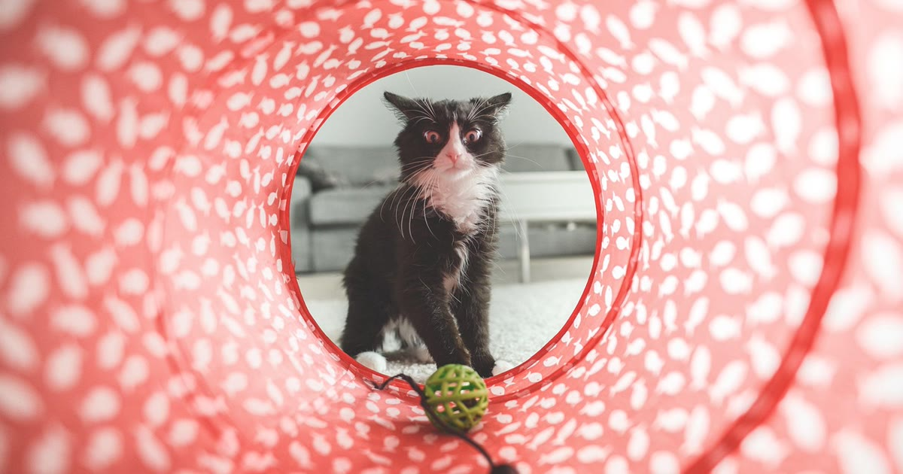
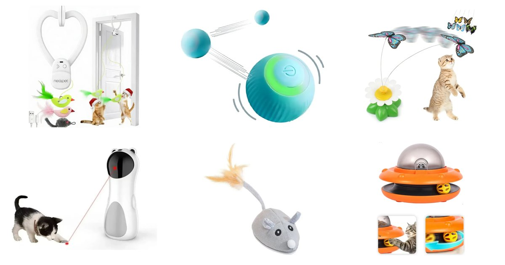
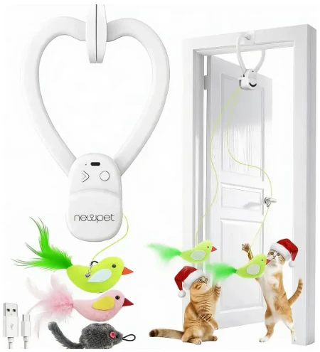
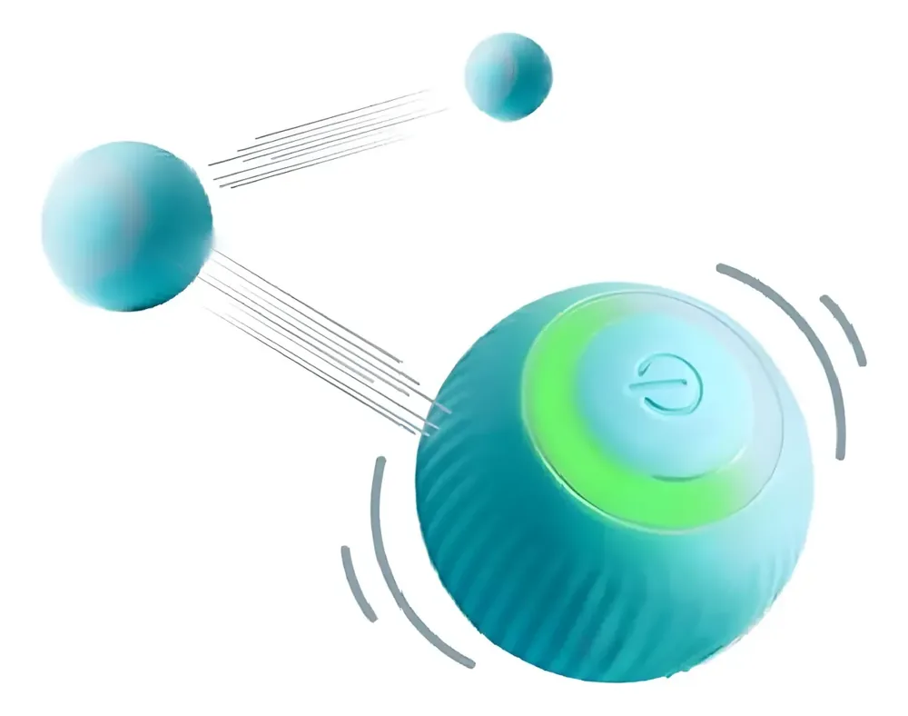
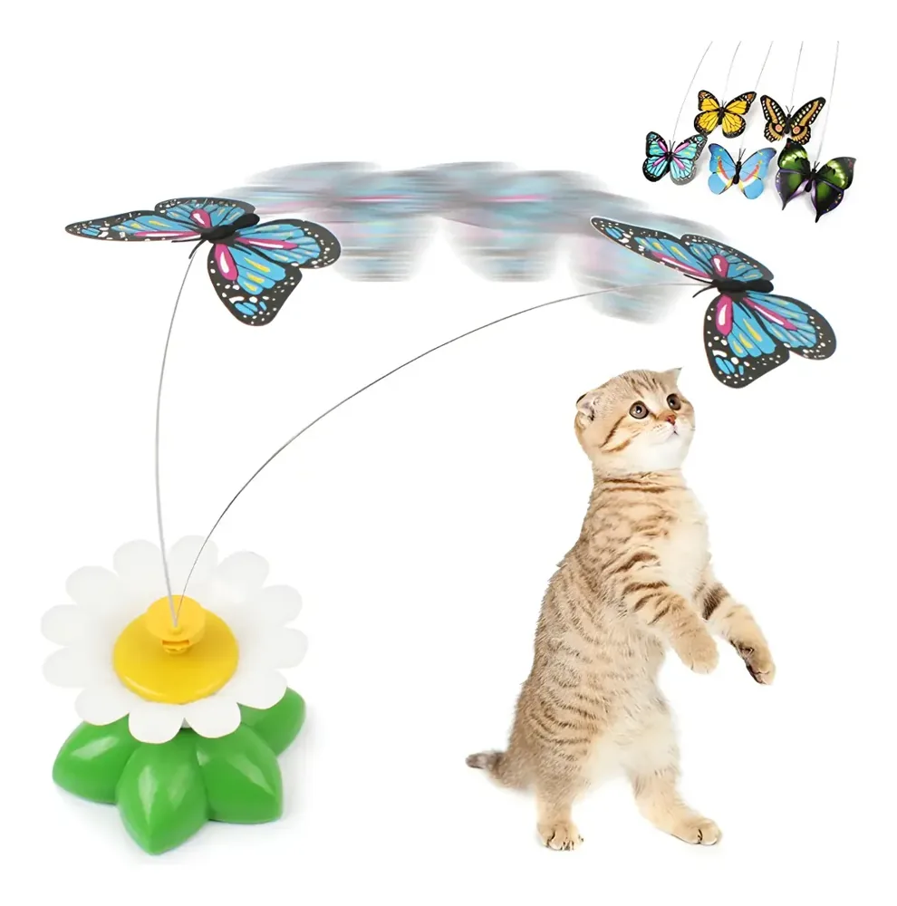
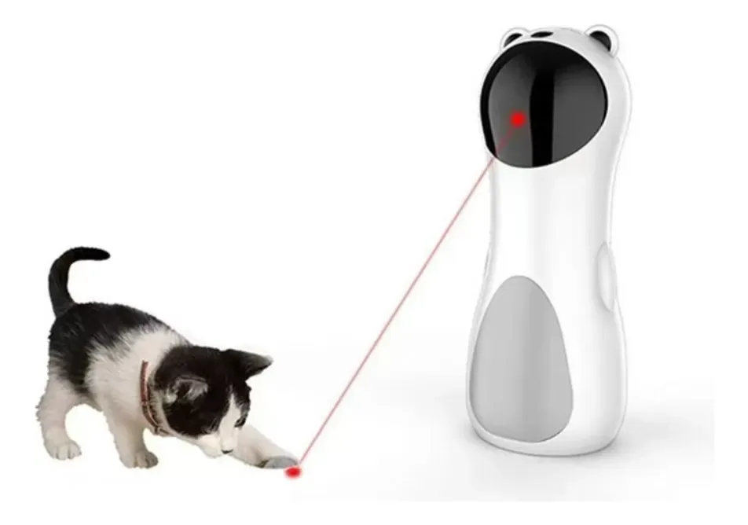
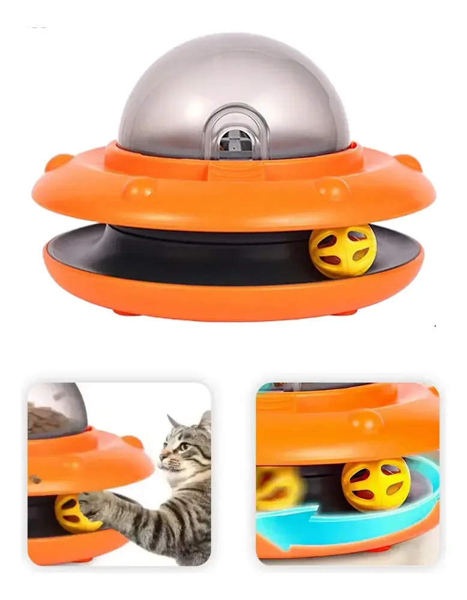
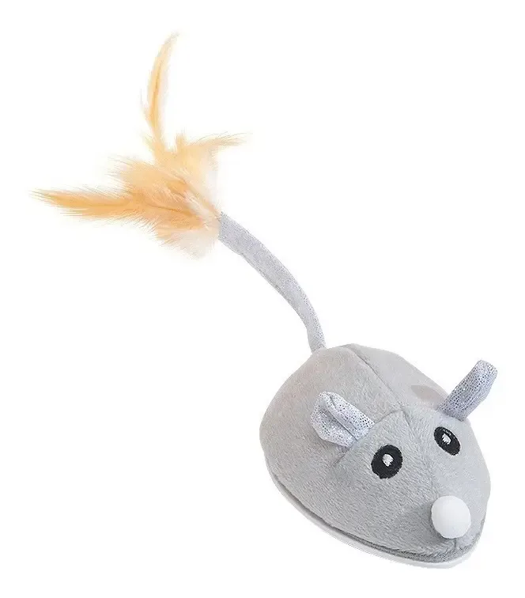

O melhor brinquedo automático para gatos, entre os seis que comparamos, é a varinha automática com pena da New Pet: presa no batente da porta, ela faz um passarinho subir e descer sozinho, alterna brincadeira e descanso, recarrega por USB e tem nota 4,9 em 75 avaliações, por R$ 98,80 na loja oficial no Mercado Livre (preço de 13/11/2026). Com orçamento menor, a bolinha giratória recarregável com LED custa R$ 22 e é o melhor jeito de testar se o seu gato gosta de brinquedo automático. Para gato que gosta de pular, a borboleta rotativa sai por R$ 29,87. Se o seu gato é guloso ou come rápido demais, o brinquedo dispensador de ração (R$ 106,51) transforma a refeição em brincadeira. O laser automático (R$ 59,99) cobre mais área, e o ratinho elétrico com pena (R$ 185,34) é o que mais imita uma presa de verdade.
Varinha automática New Pet, a mais bem avaliada: nota 4,9 e loja oficial.Link de afiliado — sem custo extra para você.
Ver preço no Mercado Livre →Escolha rápida
- Melhor no geral: varinha automática com pena New Pet (R$ 98,80, nota 4,9 em 75 avaliações)
- Melhor custo-benefício: bolinha giratória com LED (R$ 22, recarregável por USB-C)
- Para gato que pula e caça no ar: borboleta rotativa (R$ 29,87, 1 pilha AAA)
- Para cobrir mais espaço: laser automático (R$ 59,99)
- Para gato guloso ou que come rápido: brinquedo dispensador de ração (R$ 106,51, com controle remoto)
- O que mais parece uma presa: ratinho elétrico PATYOCAT (R$ 185,34, até 2 h por carga)
A tabela coloca lado a lado os seis brinquedos interativos automáticos para gatos que selecionamos no Mercado Livre. Os preços foram consultados em 13/11/2026 e mudam com frequência, principalmente em época de Black Friday, então confira no link antes de comprar.
| Modelo | Estímulo | Preço | Energia | Nota no ML | Indicado para | |
|---|---|---|---|---|---|---|
| Varinha automática New Pet | Caçar passarinho no ar | R$ 98,80 | Recarregável USB | 4,9 (75) | Apartamento, gato que pula, casa com vários gatos | Ver preço |
| Bolinha giratória LED | Perseguir no chão | R$ 22 | Recarregável USB-C | 4,2 (34) | Qualquer gato, primeiro brinquedo | Ver preço |
| Borboleta rotativa | Caçar no ar e pular | R$ 29,87 | 1 pilha AAA (não inclusa) | 4,9 (8) | Gatos jovens e ativos | Ver preço |
| Laser automático | Correr atrás da luz | R$ 59,99 | Não informada no anúncio | Sem avaliações | Casas com espaço livre | Ver preço |
| Dispensador de ração | Brincar para ganhar comida | R$ 106,51 | Bateria 1.200 mAh (USB) + controle com 2 pilhas AA | Sem avaliações | Gato guloso ou que come rápido | Ver preço |
| Ratinho elétrico PATYOCAT | Caçar presa no chão | R$ 185,34 no Pix | Recarregável USB, até 2 h | Sem avaliações | Gato caçador que ignora bolinhas | Ver preço |

Antes da marca, escolha o tipo de estímulo. Cada gato tem uma forma preferida de caçar, e um brinquedo interativo automático só prende a atenção se imitar essa caçada.
| Se o seu gato… | Escolha | Por quê |
|---|---|---|
| Corre atrás de tudo que rola no chão | Bolinha giratória ou ratinho elétrico | Imitam uma presa fugindo pelo chão, com mudanças de direção imprevisíveis |
| Pula em insetos e varinhas | Varinha automática New Pet ou borboleta rotativa | O alvo fica no ar e obriga o gato a saltar; a varinha não ocupa espaço no chão |
| Fica fascinado por reflexos e luz | Laser automático | Cobre uma área grande sem o tutor precisar segurar o apontador |
| Vive pedindo comida ou come rápido demais | Dispensador de ração | Faz o gato "trabalhar" pela comida, como faria na natureza |
| Está entediado ou sedentário | Comece pela bolinha (mais barata) e faça rodízio | Variar o estímulo evita que ele perca o interesse em poucos dias |
Quer se aprofundar em um tipo específico? Veja o comparativo de bolinhas inteligentes para gato, entenda como funciona o brinquedo com sensor infravermelho, conheça os melhores comedouros interativos ou veja como escolher brinquedo para gato entediado.
Os dados de cada modelo vêm do anúncio no Mercado Livre e das avaliações publicadas por compradores. Não testamos os brinquedos; veja como escolhemos.

É o brinquedo automático mais bem avaliado da lista e o que mais imita uma caçada de verdade. O suporte em forma de coração se prende no batente da porta, na borda da mesa, na prateleira ou no peitoril da janela, e uma corda elástica retrátil faz um passarinho de pena subir e descer, imitando o voo. O gato persegue e salta, e o brinquedo não ocupa espaço no chão, o que ajuda em apartamento pequeno e casa com vários gatos.
Segundo o anúncio, ele tem um ciclo automático de brincar e descansar para manter a curiosidade por mais tempo, motor silencioso e um conector que se solta se o gato puxar com muita força, para evitar ferimentos. Os acessórios de passarinho e ratinho podem ser trocados, o que renova a "presa".
| Preço | R$ 98,80 (de R$ 128, 22% de desconto) ou 12x de R$ 9,73. No kit de 2, sai a R$ 94,22 por unidade |
|---|---|
| Movimento | Passarinho sobe e desce por corda elástica retrátil, com ciclo automático de brincar e descansar |
| Instalação | Batente de porta, borda de mesa, prateleira ou peitoril de janela |
| Energia | Bateria recarregável por USB |
| Acessórios | Passarinhos de pena e ratinho, substituíveis |
| Tamanho e peso | 21,3 x 12,6 x 6,9 cm, 300 g (modelo NPC11032) |
| Avaliações | 4,9 de 5 em 75 avaliações, 42 comentários e +500 vendidos |
| Vendedor e garantia | Loja oficial New Pet (+50 mil vendas, nota fiscal), envio Full; 30 dias de garantia de fábrica |
"Geralmente não faço avaliações, mas aqui precisei fazer. É com certeza o brinquedo de melhor qualidade que já comprei para pets, muito bem feito, ótimo material, as gatas amaram..."
★★★★★ comprador, Mercado Livre · 6 pessoas acharam útil"Minha gata que tem 10kg agora vai emagrecer um pouco, tá muito gorda."
★★★★★ comprador, Mercado Livre🐦 Varinha automática New Pet, nota 4,9 na loja oficial: veja o preço de hoje.
Ver preço no Mercado LivreLink de afiliado: podemos receber uma comissão por compras feitas através deste link, sem custo adicional para você.

É o brinquedo automático para gato mais barato da lista e o melhor ponto de partida para quem quer gastar pouco: a bolinha gira e muda de direção sozinha, o LED troca de cor e a bateria recarrega por USB-C, sem gastar pilha. Segundo o anúncio, ela tem sensores que reagem ao movimento do gato, vários modos de brincadeira e revestimento resistente a arranhões e mordidas, e é silenciosa ao bater na parede.
| Preço | R$ 22, com frete grátis acima de R$ 19 |
|---|---|
| Movimento | Gira e muda de direção sozinha, com modos de velocidade e direção diferentes |
| Energia | Bateria recarregável por USB-C |
| Luz e som | LED que troca de cor; sem som |
| Cores | Rosa e azul-verde |
| Avaliações | 4,2 de 5 em 34 avaliações e +100 vendidos |
| Garantia | 7 dias do vendedor, mais 30 dias de devolução grátis do Mercado Livre |
"A bolinha é exatamente como a foto. Ela pula e gira e troca de cor. Eu dei 4 estrelas porque o botão dela é muito fácil de apertar e em menos de 2 minutos de brincadeira, meu filhotinho já..."
★★★★☆ comprador, Mercado LivreO comentário indica o principal ponto de atenção: o botão é sensível, então o próprio gato pode acabar desligando a bolinha ao brincar. Vale observar nas primeiras sessões.
🐾 Bolinha giratória com LED, recarregável por USB-C: veja o preço de hoje.
Ver preço no Mercado LivreLink de afiliado: podemos receber uma comissão por compras feitas através deste link, sem custo adicional para você.

A borboleta fica presa a um fio fino que sai de uma base em forma de flor. Ligada, ela gira 360° e balança de forma imprevisível, subindo até 29 cm, o que leva o gato a pular e tentar capturá-la no ar. É a opção mais barata com estímulo vertical, ótima para gatos jovens e cheios de energia.
| Preço | R$ 29,87 ou 18x no cartão Mercado Pago |
|---|---|
| Movimento | Borboleta gira 360° presa a um fio; altura de até 29 cm |
| Energia | 1 pilha AAA, não inclusa |
| Tamanho | Base de 5,5 cm de altura; caixa de 9 x 10 x 8 cm |
| Material | Plástico |
| Avaliações | 4,9 de 5 em 8 avaliações e +50 vendidos |
| Vendedor | MercadoLíder, com +5 mil vendas |
| Garantia | 7 dias do vendedor |
🦋 Borboleta rotativa para gatos: veja o preço e a disponibilidade de hoje.
Ver preço no Mercado LivreLink de afiliado: podemos receber uma comissão por compras feitas através deste link, sem custo adicional para você.

É uma torre de cerca de 18 cm de altura que projeta um ponto de luz em movimento pelo chão. O tutor não precisa segurar o apontador, e o ponto percorre uma área bem maior do que uma bolinha alcança, o que faz o gato correr, saltar e mudar de direção.
O próprio anúncio traz os cuidados certos: nunca apontar para os olhos, evitar espelhos e vidros, acompanhar as primeiras sessões e terminar a brincadeira com um brinquedo que o gato consiga pegar ou um petisco, para ele não ficar frustrado por nunca capturar a luz.
| Preço | R$ 59,99 ou 2x de R$ 30 sem juros |
|---|---|
| Movimento | Projeção automática de ponto de laser em movimento |
| Tamanho | Cerca de 18 cm de altura e 7 cm de largura |
| Energia | O anúncio diz que a alimentação (USB ou pilha) não está confirmada; pergunte ao vendedor antes de comprar |
| Ambiente | Áreas internas, secas, com espaço livre |
| Avaliações | Ainda sem avaliações |
| Vendedor | Novo, ainda sem vendas suficientes para ser avaliado |
🔴 Laser automático para gatos: veja o preço de hoje e tire dúvidas com o vendedor.
Ver preço no Mercado LivreLink de afiliado: podemos receber uma comissão por compras feitas através deste link, sem custo adicional para você.

Une brinquedo e comedouro: a bola se movimenta e, quando é acionada pelo gato ou pelo tutor, libera pequenas porções de ração ou petisco. Esse tipo de enriquecimento alimentar estimula o forrageamento, o comportamento natural de procurar comida (Gatoca), e ajuda gatos que comem rápido demais ou ficam o dia pedindo comida.
| Preço | R$ 106,51 (preço de Black Friday) ou 4x de R$ 26,63 sem juros |
|---|---|
| Funcionamento | Dois modos: o gato movimenta a bola sozinho, ou o tutor aciona pelo controle remoto |
| Energia | Bateria de 1.200 mAh recarregável por USB (5V/1A); o controle usa 2 pilhas AA, não inclusas |
| Tamanho e peso | 20 x 20 x 13 cm, cerca de 650 g |
| Material | Plástico ABS laranja |
| Na caixa | Brinquedo, escova pequena, 3 tampas de comida, cabo USB, chave de fenda e manual |
| Avaliações | Ainda sem avaliações (2 vendidos) |
| Vendedor e garantia | MercadoLíder Gold, +5 mil vendas; garantia de 30 dias |
🍽️ Brinquedo dispensador de ração com controle remoto: veja o preço de hoje.
Ver preço no Mercado LivreLink de afiliado: podemos receber uma comissão por compras feitas através deste link, sem custo adicional para você.

Um ratinho de pelúcia com rodas de borracha que corre pelo chão e, segundo o anúncio, muda de direção sozinho ao encontrar um obstáculo. A cauda é de pena natural e ele tem som embutido, o que o torna o brinquedo da lista mais parecido com uma presa de verdade. É para o gato caçador que ignora bolinhas.
| Preço | R$ 185,34 no Pix ou R$ 195,09 em 6x de R$ 32,52 sem juros |
|---|---|
| Movimento | Corre pelo chão e muda de direção ao bater em obstáculos |
| Energia | Bateria recarregável por USB, inclusa; recarga em 1 h 50 min e até 2 h de uso contínuo |
| Som | Sim |
| Tamanho | 31 x 4,5 x 6,5 cm (com a cauda) |
| Avaliações | Ainda sem avaliações |
| Garantia | O anúncio indica "sem garantia"; vale a devolução grátis de 30 dias do Mercado Livre |
🐭 Ratinho elétrico com pena natural e bateria recarregável: veja o preço de hoje.
Ver preço no Mercado LivreLink de afiliado: podemos receber uma comissão por compras feitas através deste link, sem custo adicional para você.
Quatro dos seis modelos são recarregáveis (varinha New Pet, bolinha, ratinho e dispensador), um usa pilha AAA (borboleta) e o laser não informa a alimentação. Para brinquedo que o gato usa todo dia, o recarregável costuma sair mais barato com o tempo, porque não há troca de pilha. Já o de pilha não fica parado esperando carga e é mais simples de usar. O comparativo completo está em brinquedo interativo: pilha ou recarregável.
Os deslizes mais frequentes estão em erros comuns ao usar brinquedo interativo para gato. E vale lembrar: o brinquedo automático complementa, mas não substitui, a brincadeira com você. Veja brinquedo interativo substitui a brincadeira com o tutor?
Vale, com ajustes. Gatos idosos preferem movimento suave, sem saltos ou corridas intensas. Na lista, a bolinha giratória em velocidade baixa e o dispensador de ração são as opções mais adequadas. A varinha New Pet também serve se for instalada mais baixa, para o gato alcançar sem saltar; a borboleta e o laser exigem pulos e corridas. Veja o guia completo de brinquedo interativo para gato idoso.
Bolinhas giratórias e dispensadores de petisco também existem em versões para cães, normalmente maiores e mais resistentes a mordidas. Veja as opções de brinquedo automático para cachorro que fica sozinho.
Selecionamos seis brinquedos automáticos que cobrem os principais tipos de estímulo (caçar passarinho, perseguir no chão, pular, correr atrás da luz, brincar por comida e caçar presa) entre os anúncios do Mercado Livre, em 13/11/2026. Para cada um, registramos preço, fonte de energia, avaliações, reputação do vendedor e garantia direto na página do anúncio, e citamos comentários de compradores quando havia. Não testamos os brinquedos fisicamente. Quando um dado não aparece no anúncio, como a alimentação do laser, dizemos isso no texto em vez de supor. A ordem considera custo-benefício, avaliações e quantos gatos o tipo de estímulo atende.
Se quer o brinquedo automático para gatos mais completo e bem avaliado, escolha a varinha automática New Pet: nota 4,9, loja oficial e não ocupa espaço no chão. Se nunca comprou um brinquedo desse tipo e quer gastar pouco, comece pela bolinha giratória com LED, que por R$ 22 mostra se o seu gato se interessa. Gato que pula também gosta da borboleta rotativa, gato guloso aproveita mais o dispensador de ração, e o ratinho elétrico é o investimento para o caçador exigente. Seja qual for a escolha, sessões curtas e rodízio fazem mais diferença do que o modelo.
Entre os seis que comparamos, a varinha automática com pena da New Pet: faz um passarinho subir e descer sozinho, alterna brincadeira e descanso, recarrega por USB e tem nota 4,9 em 75 avaliações, por R$ 98,80 no Mercado Livre em 13/11/2026. A opção mais barata é a bolinha giratória com LED, por R$ 22.
Entre os modelos que comparamos, de R$ 22 (bolinha giratória com LED) a R$ 185,34 (ratinho elétrico PATYOCAT). A borboleta rotativa custa R$ 29,87, o laser automático R$ 59,99, a varinha automática New Pet R$ 98,80 e o dispensador de ração R$ 106,51, em preços de 13/11/2026.
Funciona como complemento: mantém o gato ativo nos períodos em que o tutor está fora e ajuda contra tédio e sedentarismo. Supervisione as primeiras sessões, prefira modelos sem fios ou peças pequenas para os momentos sem supervisão e guarde o brinquedo depois de usar, para ele não perder a graça.
O risco é apontar a luz para os olhos e a frustração de nunca capturar a presa. Mantenha o laser longe dos olhos de animais e pessoas, evite espelhos e vidros e termine a sessão com um brinquedo que o gato consiga pegar ou com um petisco.
Para uso diário, o recarregável costuma compensar porque não há gasto com pilhas. A varinha New Pet, a bolinha giratória, o ratinho elétrico e o dispensador de ração da lista são recarregáveis por USB; a borboleta rotativa usa 1 pilha AAA, não inclusa.
Sessões curtas, de 10 a 15 minutos, algumas vezes ao dia, costumam funcionar melhor do que deixar o brinquedo ligado por horas. Alterne os brinquedos ao longo da semana para manter o interesse.
Não. Ele complementa a estimulação física e mental quando o tutor está ausente, mas não substitui a interação direta, que tem valor social e emocional que o brinquedo sozinho não oferece.
Sim, desde que o movimento seja suave e não exija saltos ou corridas intensas. A bolinha giratória em velocidade baixa, o dispensador de ração e a varinha New Pet instalada mais baixa são as opções mais adequadas para gatos idosos.
Mais respostas em dúvidas sobre brinquedo interativo para gato.
Escrito por Nildo Alves para o Smart Pet Gadgets. Preços e especificações vêm dos anúncios no Mercado Livre em 13/11/2026 e podem mudar. Veja nossa política editorial e como verificamos as fontes citadas neste artigo.
Nildo Alves — curadoria de produtos pet no Smart Pet Gadgets. Pesquisa e compara produtos para cães e gatos, cruzando especificações de fabricante com boas práticas veterinárias e dados de mercado.
Sobre o Smart Pet Gadgets · Contato · Política editorial e de afiliados